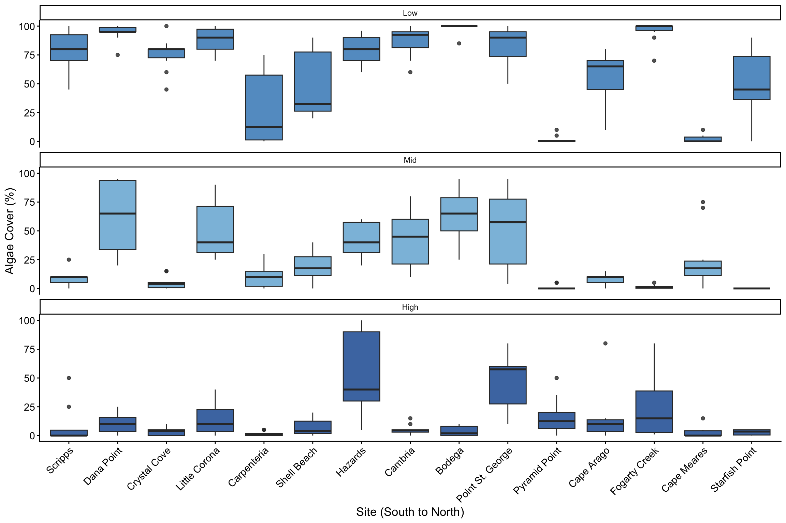

library(tidyverse)
library(here)
library(janitor)
library(praise)Homework_Week9
10/26/26
Aloha! This is my Quarto document for my Week 9 homework.
Goals for this homework:
- Working with intertidal data. Your goal is to make a plot where at least one axis is a factor in a meaningful order.
Load Libraries
Load Data
intertidal <- read_csv(here("Week_09","Data","intertidaldata.csv"))
intertidal_lat <- read_csv(here("Week_09","Data","intertidaldata_latitude.csv"))This dataset contains observations of organisms in the intertidal across different sites and tide heights.
Check Data
glimpse(intertidal)Rows: 450
Columns: 13
$ Site <chr> "Scripps", "Scripps", "Scripps", "Scripps", "Scr…
$ Transect <dbl> 1, 1, 1, 2, 2, 2, 3, 3, 3, 4, 4, 4, 5, 5, 5, 6, …
$ Quadrat <chr> "Low .", "Mid", "High", "Low", "Mid", "High", "…
$ `Bare Rock` <dbl> 25, 50, 20, 10, 40, 40, 0, 30, 60, 0, 45, 70, 5,…
$ Algae <dbl> 75, 0, 50, 85, 5, 5, 100, 5, 4, 100, 10, 0, 70, …
$ Mussels <dbl> 0, 5, 1, 0, 10, 0, 0, 10, 1, 0, 3, 0, 0, 5, 0, 0…
$ `Small Barnacles` <dbl> 2, 50, 50, 0, 40, 55, 0, 40, 20, 0, 25, 25, 20, …
$ `Large Barnacles` <dbl> 5, 5, 0, 0, 1, 0, 1, 0, 0, 0, 15, 5, 5, 0, 0, 5,…
$ `Gooseneck Barnacles` <dbl> 0, 0, 0, 5, 5, 0, 0, 30, 5, 0, 0, 0, 0, 0, 0, 0,…
$ Anemone <dbl> 3, 0, 0, 0, 0, 0, 0, 0, 0, 0, 5, 0, 0, 10, 0, 0,…
$ `Whelks (Counts)` <dbl> 0, 0, 0, 0, 0, 0, 0, 0, 1, 0, 0, 0, 0, 1, 0, 0, …
$ `Crabs (Counts)` <dbl> 0, 0, 0, 0, 0, 0, 0, 0, 0, 0, 0, 0, 0, 0, 0, 0, …
$ `Stars (Counts)` <dbl> 0, 0, 0, 0, 0, 0, 0, 0, 0, 0, 0, 0, 0, 0, 0, 0, …unique(intertidal$Quadrat)[1] "Low ." "Mid" "High" "Low" "Mid 1"Combine Data
intertidal_final <- intertidal |>
left_join(intertidal_lat, by = "Site")
glimpse(intertidal_final)Rows: 450
Columns: 14
$ Site <chr> "Scripps", "Scripps", "Scripps", "Scripps", "Scr…
$ Transect <dbl> 1, 1, 1, 2, 2, 2, 3, 3, 3, 4, 4, 4, 5, 5, 5, 6, …
$ Quadrat <chr> "Low .", "Mid", "High", "Low", "Mid", "High", "…
$ `Bare Rock` <dbl> 25, 50, 20, 10, 40, 40, 0, 30, 60, 0, 45, 70, 5,…
$ Algae <dbl> 75, 0, 50, 85, 5, 5, 100, 5, 4, 100, 10, 0, 70, …
$ Mussels <dbl> 0, 5, 1, 0, 10, 0, 0, 10, 1, 0, 3, 0, 0, 5, 0, 0…
$ `Small Barnacles` <dbl> 2, 50, 50, 0, 40, 55, 0, 40, 20, 0, 25, 25, 20, …
$ `Large Barnacles` <dbl> 5, 5, 0, 0, 1, 0, 1, 0, 0, 0, 15, 5, 5, 0, 0, 5,…
$ `Gooseneck Barnacles` <dbl> 0, 0, 0, 5, 5, 0, 0, 30, 5, 0, 0, 0, 0, 0, 0, 0,…
$ Anemone <dbl> 3, 0, 0, 0, 0, 0, 0, 0, 0, 0, 5, 0, 0, 10, 0, 0,…
$ `Whelks (Counts)` <dbl> 0, 0, 0, 0, 0, 0, 0, 0, 1, 0, 0, 0, 0, 1, 0, 0, …
$ `Crabs (Counts)` <dbl> 0, 0, 0, 0, 0, 0, 0, 0, 0, 0, 0, 0, 0, 0, 0, 0, …
$ `Stars (Counts)` <dbl> 0, 0, 0, 0, 0, 0, 0, 0, 0, 0, 0, 0, 0, 0, 0, 0, …
$ Latitude <dbl> 32.87138, 32.87138, 32.87138, 32.87138, 32.87138…Cleanup Final Data
intertidal_final <- intertidal_final |>
clean_names() |> # Makes column names lowercase and consistent, after using this code, you have to type your column names in lowercase when coding
mutate(quadrat = recode(quadrat, "Low ." = "Low", "Mid 1" = "Mid"), # there were some quadrats written incorrectly, so fixing here
quadrat = factor(quadrat, levels = c("Low", "Mid", "High")), # reorders the tide height from low to high
site = fct_reorder(site, latitude)) # reorders the sites from South to North just from using the latitude, pretty cool Here I cleaned the column names and fixed some of the data observations that were written incorrectly. Then I used factor() to order the tide heights from Low to High and fct_reorder() to arrange the sites by latitude from south to north.
Final Plot
# Trying out a boxplot for fun
AlgaePlot <- intertidal_final |>
ggplot(aes(x = site, y = algae, fill = quadrat)) +
geom_boxplot(alpha = 0.8) + # transparency of the boxplot
facet_wrap(~quadrat, ncol = 1) + # You can specify the number of columns/rows to display using facet_wrap with "ncol"
scale_fill_manual(values = c("Low" = "#3182bd", "Mid" = "#6baed6", "High" = "#08519c")) + # Shoutout to colorbrewer, using "fill" because it is a boxplot
labs(x = "Site (South to North)", y = "Algae Cover (%)", fill = "Tide Height") +
theme_classic() +
theme(legend.position = "none", # don't need a legend because it is clear in the figure
axis.text = element_text(size = 11),
axis.title = element_text(size = 13),
axis.text.x = element_text(angle = 45, hjust = 1)) #hjust, helps the text in the x axis horizonatlly and in a angle
AlgaePlot
praise() # Thank you!!![1] "You are laudable!"ggsave(here("Week_09", "Outputs", "Week9HomeworkPlot.png"),
width = 12,
height = 8)
Figure 1 shows the distribution of percent algae cover across all the intertidal sites ordered by latitude from south to north. I used facet_wrap() to separate the Low, Mid, and High tide heights into three panels, which makes it easier to compare algae cover across the sites and tide heights.